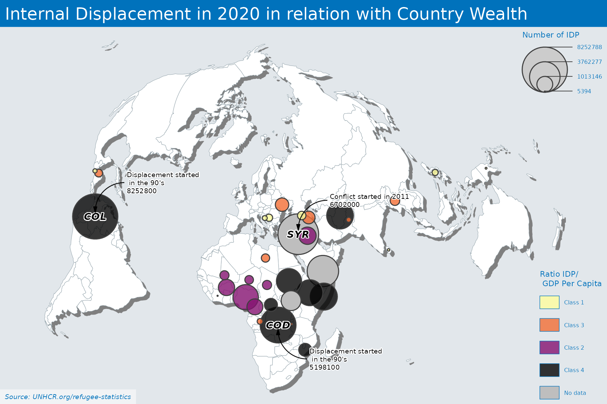

The map is presented with the Bertin 1953 projection
## Getting world map for mapping
world <- rnaturalearth::ne_countries(scale = "small", returnclass = "sf") %>%
filter(continent != "Antarctica") %>%
# this is the crs from d, which has no EPSG code:
sf::st_transform(., '+init=epsg:4326')
#> Warning in CPL_crs_from_input(x): GDAL Message 1: +init=epsg:XXXX syntax is
#> deprecated. It might return a CRS with a non-EPSG compliant axis order.
world2 <- rnaturalearth::ne_countries(scale = "small", returnclass = "sf") %>%
filter(continent != "Antarctica") %>%
# this is the crs from d, which has no EPSG code:
#sf::st_transform(., '+init=epsg:4326')
#sf::st_transform(., '+proj=bertin1953 +R=1 0.72 0.73')
#sf::st_transform(., '+proj=bertin1953 +x_0=1000')
sf::st_transform(., '+proj=bertin1953')
#centroids <- sf::st_centroid(world$geometry)
centroids <- sf::st_transform(world$geometry, '+init=epsg:3857') %>%
## Reprojected in order to get centroid
sf::st_centroid() %>%
sf::st_geometry()%>%
# this is the crs from d, which has no EPSG code:
#sf::st_transform(., '+init=epsg:4326')%>%
#sf::st_transform(., '+proj=bertin1953 +R=1 0.72 0.73') %>%
#sf::st_transform(., '+proj=bertin1953 +x_0=1000') %>%
sf::st_transform(., '+proj=bertin1953') %>%
# since we want the centroids in long lat:
as.data.frame()
world_points <- world %>%
sf::st_drop_geometry() %>%
cbind(., centroids)
## Loading the stat tables
lastyear <- max(unhcrdatapackage::end_year_population_totals_long$Year)
data <- dplyr::left_join( x= unhcrdatapackage::end_year_population_totals_long,
y= unhcrdatapackage::reference,
by = c("CountryAsylumCode" = "iso_3")) %>%
filter(Population.type == "IDP" &
Year == lastyear & !(is.na(UNHCRBureau))) %>%
group_by(Year, CountryAsylumName, CountryAsylumCode, UNHCRBureau ) %>%
summarise(Value2 = sum(Value) )
#> `summarise()` has grouped output by 'Year', 'CountryAsylumName', 'CountryAsylumCode'. You can override using the `.groups` argument.
df3 <- merge(x = data , y = world_points,
by.x = "CountryAsylumCode" , by.y = "iso_a3") %>%
sf::st_as_sf()
df3$quint2 <- Hmisc::cut2(df3$Value, g = 4)Now let’s get World Bank data to join them
wb_data <- wbstats::wb( indicator = c("SP.POP.TOTL", ## Population total https://data.worldbank.org/indicator/SP.POP.TOTL
"NY.GDP.MKTP.CD", ## GDP current https://data.worldbank.org/indicator/NY.GDP.MKTP.CD
"NY.GDP.PCAP.CD", ## GDP per capita https://data.worldbank.org/indicator/NY.GDP.PCAP.CD
"NY.GNP.PCAP.CD" ## GNI per capita, Atlas method (current US$) https://data.worldbank.org/indicator/NY.GNP.PCAP.CD
),
startdate = 1951, enddate = lastyear, return_wide = TRUE)
#> Warning: `wb()` was deprecated in wbstats 1.0.0.
#> Please use `wb_data()` instead.
# # Renaming variables for further matching
names(wb_data)[1] <- "CountryAsylumCode"
names(wb_data)[2] <- "Year"
df4 <- df3 %>%
select("CountryAsylumCode", "Year", "CountryAsylumName", "UNHCRBureau", "Value2") %>%
## Now merge with WB Data
left_join(wb_data %>% select("SP.POP.TOTL","NY.GDP.PCAP.CD", "NY.GDP.MKTP.CD","CountryAsylumCode", "Year") %>%
filter(Year == lastyear),
by = c( "CountryAsylumCode" )) %>%
mutate(idp.gdp2 = round( Value2 /NY.GDP.MKTP.CD , 4) ) %>%
mutate(idp.gdp = round( Value2 / NY.GDP.PCAP.CD , 4) ) %>%
arrange(desc(Value2))
# Discretize the variable
df4$quint2 <- Hmisc::cut2(df4$idp.gdp, g = 4) Maps is created here with MapSF package
# Select a font already installed on your system !!
par(family="Lato")
# set a theme
mapsf::mf_theme(bg = "#E2E7EB", ## background color --> Used country
# bg = "#cdd2d4", "#faebd7ff", "#cdd2d4",
mar = c(0, 0, 2, 0), ## margins
tab = FALSE, # if TRUE the title is displayed as a 'tab'
fg = "#0072BC", ## foreground color --> for the top title - use UNHCR Blue..
pos = "left", # position, one of 'left', 'center', 'right'
inner = FALSE, # if TRUE the title is displayed inside the plot area.
line = 2, #number of lines used for the title
cex = 1.5, #cex of the title
#font = "Lato",
font = 1 ) #font of the title
## Get Break https://riatelab.github.io/mapsf/reference/mf_get_breaks.html
bks <- mapsf::mf_get_breaks(x = df4$idp.gdp,
nbreaks = 4, ## Number of class
breaks = "quantile") ## "fixed", "sd", "equal", "pretty", "quantile", "kmeans", "hclust", "bclust", "fisher", "jenks" and "dpih" are classIntervals methods. You may need to pass additional arguments for some of them.
df4$quint3 <- cut(df4$idp.gdp,
breaks =bks,
labels = c("Class 1","Class 3","Class 2","Class 4"))
mapsf::mf_init(world2)
# Plot a shadow
mapsf::mf_shadow(world2,
add = TRUE)
mapsf::mf_map(world2,
add = TRUE,
lwd = 0.5,
border = "#93A3AB",
col = "#FFFFFF")
mapsf::mf_prop_typo(
x = df4, # frame to use..
var = c("Value2", "quint3"), ## First value for size, second for color
inches = .035, # size of the biggest symbol (radius for circles, half width for squares) in inches
val_max = 90000, # maximum value used for proportional symbols
symbol = "circle", ## type of symbol- 'circle' or 'square'
border = "grey25", ## border color of symbol
lwd = 1.5, # border width of symbol
pal = "Inferno", ## Color palette - https://developer.r-project.org/Blog/public/2019/04/01/hcl-based-color-palettes-in-grdevices/
alpha = .8, ## if pal is a hcl.colors palette name, the alpha-transparency level
leg_no_data = "No data", ## When no data
col_na = "grey", ## When no data
leg_pos = c("topright", "bottomright"), # position of the legend
leg_title = c("Number of IDP", "Ratio IDP/\n GDP Per Capita"), # title of the legend
leg_title_cex = c(.7, .7), # title font size of the legend
leg_val_cex = c(.5, .5), # content font size of the legend
leg_val_rnd = .2, # number of decimal places of the values in the legend
leg_frame = c(FALSE, FALSE), # add frame around the legend
add = TRUE
)
# labels for a few countries - https://riatelab.github.io/mapsf/reference/mf_label.html
mapsf::mf_label(x = df4[df4$Value2 > 5000000,],
var = "CountryAsylumCode", # name(s) of the variable(s) to plot
cex = 0.9, # labels cex
col = "black",
font = 4,
halo = TRUE, # add halo
bg = "white", # halo color
r = 0.1, # width of the halo
overlap = FALSE, # if FALSE, labels are moved so they do not overlap.
lines = FALSE)
## Annotation - https://riatelab.github.io/mapsf/reference/mf_annotation.html
mapsf::mf_annotation(
x = df4[df4$CountryAsylumCode == "COL",], # an sf object with 1 row, a couple of coordinates (c(x, y)).
txt= paste0("Displacement started \n in the 90's \n",
as.character(round(data[data$CountryAsylumCode == "COL",c("Value2")], digits = -2) )), # the text to display
pos= "topright", # position of the text, one of "topleft", "topright", "bottomright", "bottomleft"
cex = .6, # size of the text
col_txt = "black", # text color
halo= TRUE, # add a halo around the text
bg = "white", # halo color
col_arrow= "black", # arrow color
s = 1.2 # arrow size (min=1)
)
mapsf::mf_annotation(
x = df4[df4$CountryAsylumCode == "COD",], # an sf object with 1 row, a couple of coordinates (c(x, y)).
txt= paste0("Displacement started \n in the 90's \n",
as.character(round(data[data$CountryAsylumCode == "COD",c("Value2")], digits = -2) )), # the text to display
pos= "bottomright", # position of the text, one of "topleft", "topright", "bottomright", "bottomleft"
cex = .6, # size of the text
col_txt = "black", # text color
halo= TRUE, # add a halo around the text
bg = "white", # halo color
col_arrow= "black", # arrow color
s = 1.2 # arrow size (min=1)
)
mapsf::mf_annotation(
x = df4[df4$CountryAsylumCode == "SYR",], # an sf object with 1 row, a couple of coordinates (c(x, y)).
txt= paste0("Conflict started in 2011 \n",
as.character(round(data[data$CountryAsylumCode == "SYR",c("Value2")], digits = -2) )), # the text to display
pos= "topright", # position of the text, one of "topleft", "topright", "bottomright", "bottomleft"
cex = .6, # size of the text
col_txt = "black", # text color
halo= TRUE, # add a halo around the text
bg = "white", # halo color
col_arrow= "black", # arrow color
s = 1.2 # arrow size (min=1)
)
# Set a layout
mapsf::mf_title(txt = "Internal Displacement in 2020 in relation with Country Wealth", fg = "#FFFFFF")
mapsf::mf_credits(txt = "Source: UNHCR.org/refugee-statistics", bg = "#ffffff80") 